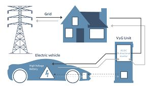

V2G 與抗空污電動車債券
電動車當移動電廠：尖離峰價差可支撐財務，還能給婦幼家庭開車。

V2G（Vehicle to Grid）描述電動車與電網的關係：不用車時，把電賣回電網；要充電時，電從電網流入車輛。車不只是交通工具，也是分散式儲能。
電力自由化之外，需要儲備電力設備，並打破「只有台電能收購」的摩擦，讓家戶屋頂與電動車更快接入。
粗算：一台約 75kWh 的車，政府若大量導入，尖峰每台供 10kW、六小時，30 萬台約 3GW；中火滿載約 5.5GW——量級上可討論「少開一半燃煤機組」的想像。
財源可來自「抗空污電動車債券」：車用來充放電賺尖離峰價差，同時低價或免費給婦幼家庭開，謝謝他們生育養育下一代納稅人。
電動車能源成本約燃油車一成；引擎污染量級也不同。電車還能吸納離岸風電等不穩定電力。空污政策若只談口號不談儲能與財務結構，很難落地。

來源: 台灣大未來 — 今日瑞士，明日台灣 — 張渝江 · 2. 能源政策與環境污染